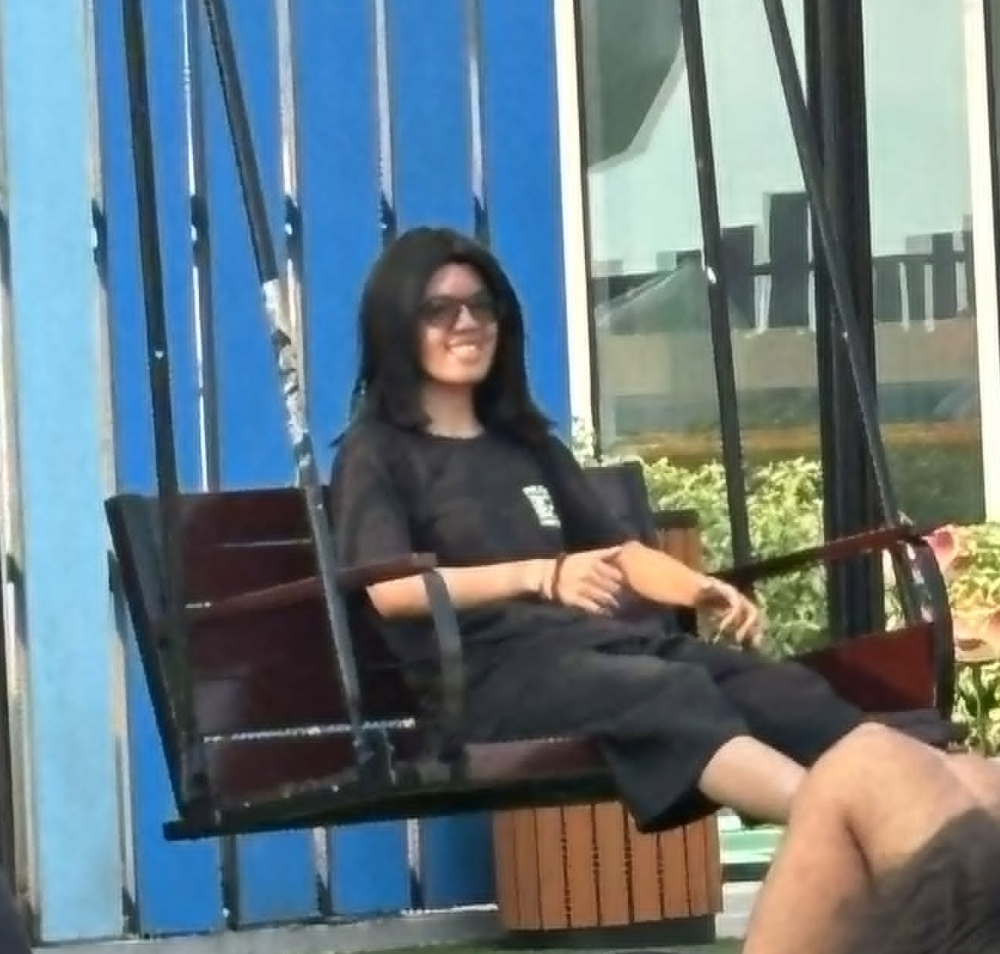

Welcome to Amber's Bizarre Adventures! This is an archive of all the places that Amber has visited and would recommend.
Amber is a 20 year old student who is a curious explorer that loves discovering new places and sharing her experiences with others. While she has visited various places, some of her favorite spots include some coffee shops and spots that gave her unique memories.
